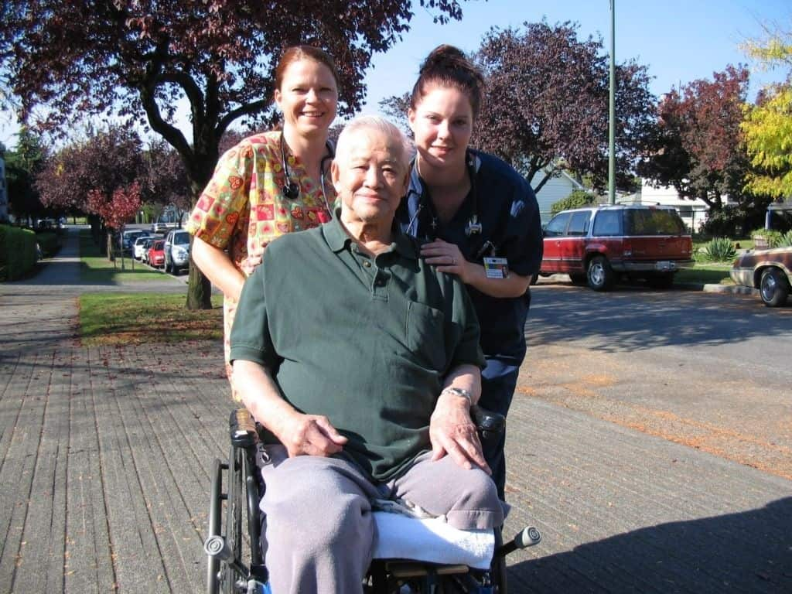
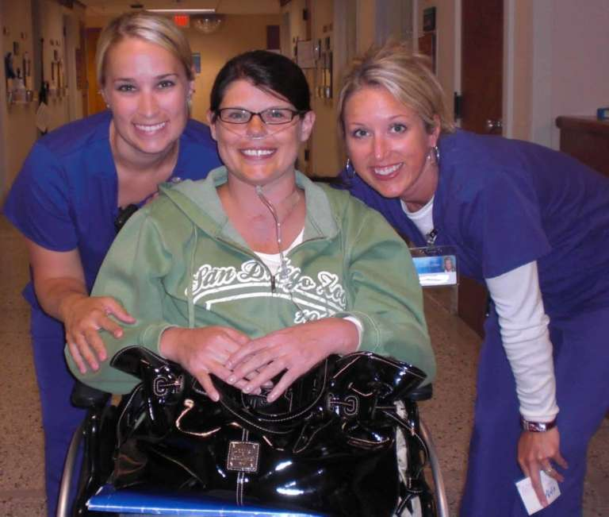
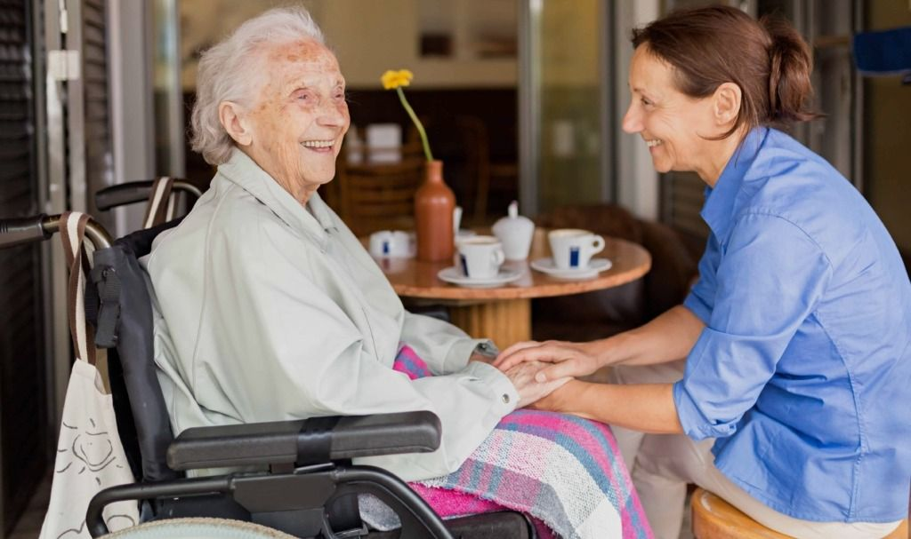
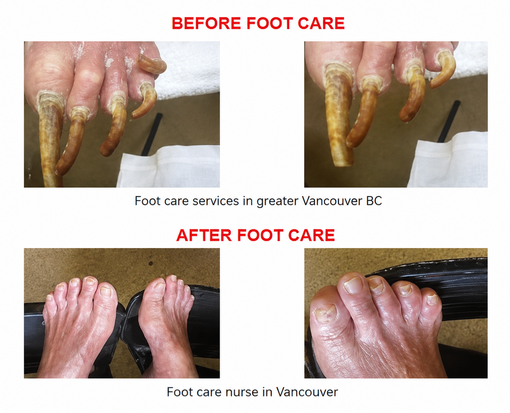
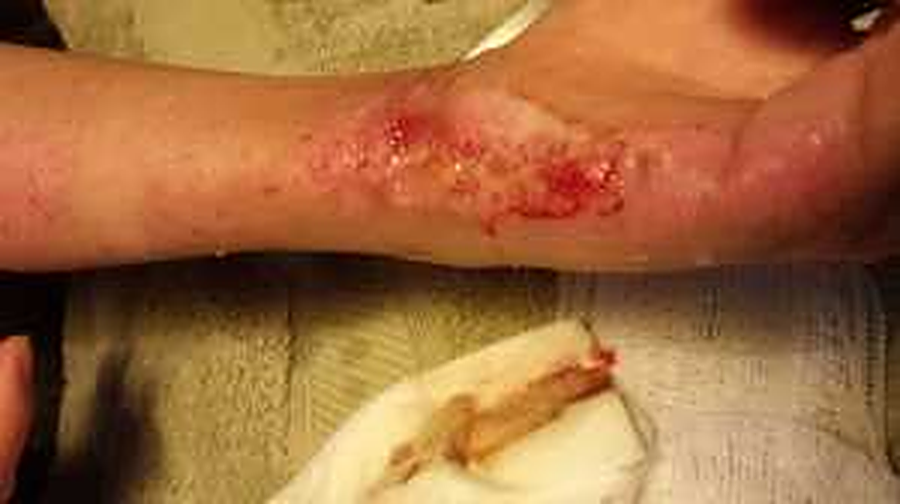
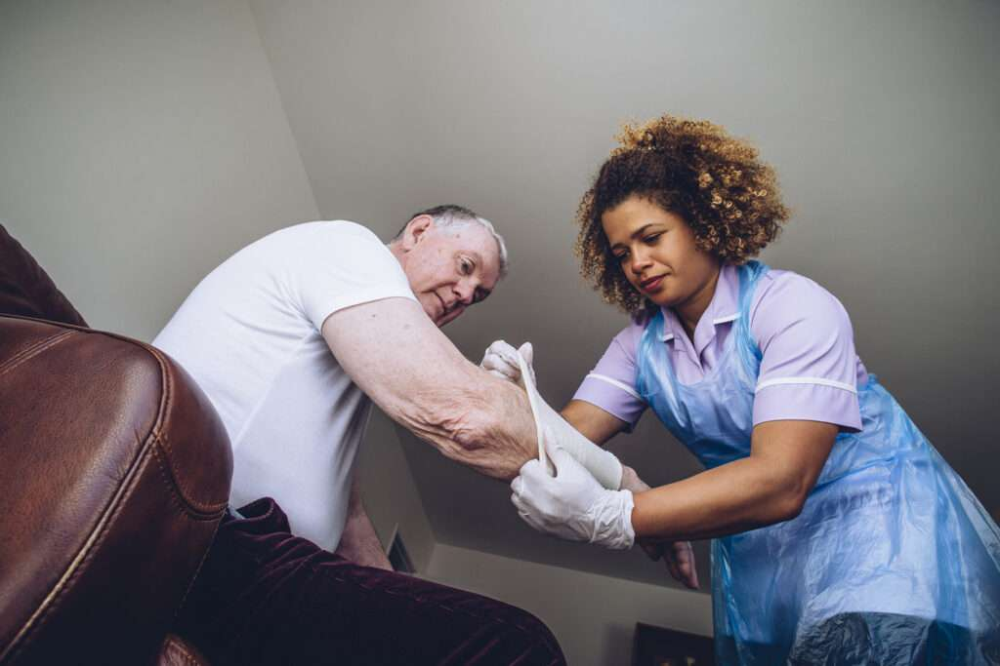
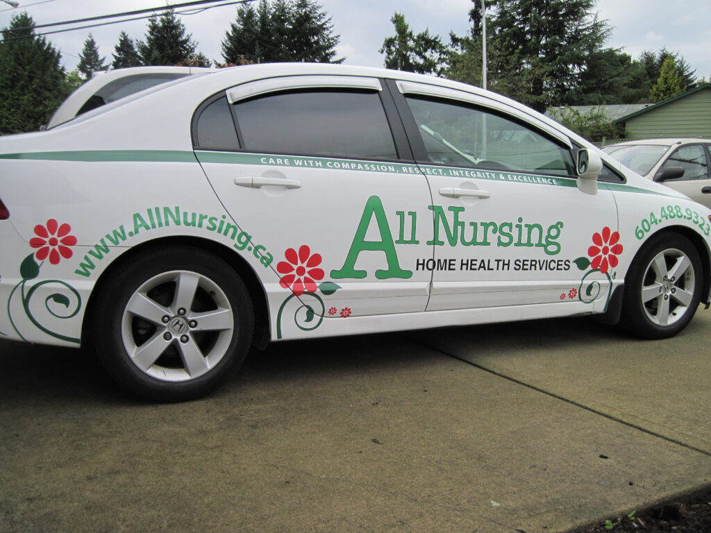

Personal Care
Bathing, dressing, grooming and hygiene support, delivered with patience and respect.
Learn moreAll Services · Greater Vancouver
From a few hours of companionship to round-the-clock skilled nursing, every service below is built on the same foundation: a free RN assessment, a personalized plan, and ongoing nursing oversight for as long as care continues.
Browse services
Bathing, dressing, grooming and hygiene support, delivered with patience and respect.
Learn moreIV therapy, wound care and clinical monitoring from Registered Nurses and LPNs.
Learn more
Round-the-clock peace of mind with a dedicated caregiver residing in the home.
Learn moreConversation, activities and social connection, plus light daily assistance.
Learn more
Dignified, round-the-clock comfort care for clients and steady family support.
Learn more
Familiar caregivers and consistent routines for clients living with Alzheimer's.
Learn moreNurse-administered infusions and injections, delivered under physician direction.
Learn more
Nail care, circulation checks and diabetic foot monitoring by a Registered Nurse.
Learn more


Support following prescribed exercise and mobility recovery programs.
Learn more
Trusted, vetted childcare placements backed by our established care agency.
Learn more